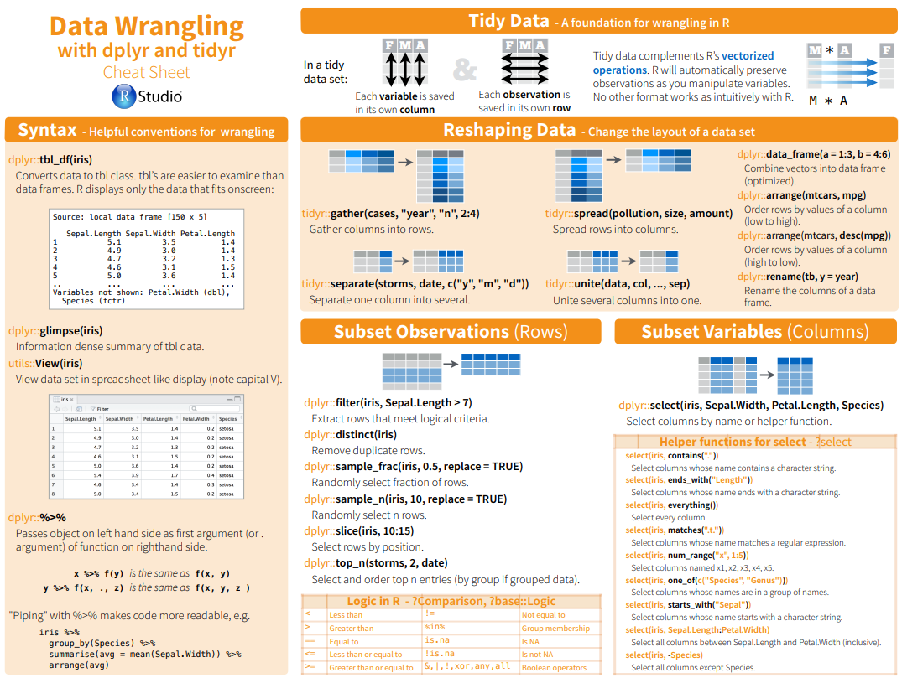

3 Data Wrangling
3.1 Data
The best way to learn how to manipulate data in R is to find a simple data set and practice different transformations. The datastes R package has many examples to experiment with.
While we will work with demo data for the rest of the examples, in practice you will likely want to import your own custom data sets.
Take a look at some available data sets in the datastes R package.
if(!require(datasets)) install.packages('datasets') #install package for the first time
library(datasets) # load package in session
.data<-data()
# str(.data) #take a look at the resulting object
head(.data$results[,c('Item','Title')]) #extract specific elements Item
[1,] "billboard"
[2,] "cms_patient_care"
[3,] "cms_patient_experience"
[4,] "construction"
[5,] "fish_encounters"
[6,] "household"
Title
[1,] "Song rankings for Billboard top 100 in the year 2000"
[2,] "Data from the Centers for Medicare & Medicaid Services"
[3,] "Data from the Centers for Medicare & Medicaid Services"
[4,] "Completed construction in the US in 2018"
[5,] "Fish encounters"
[6,] "Household data" Lets find some data about cars.
#lets look for a key word (i.e. substring) in Title of the datasets
keyword<-'car'
#try ?grepl to see how else it can be used
cars_id<-grepl(keyword,as.data.frame(.data$result)$Title,ignore.case = T)
.data$results[cars_id,] Package LibPath
[1,] "tidyr" "C:/Users/think/AppData/Local/R/win-library/4.2"
[2,] "tidyr" "C:/Users/think/AppData/Local/R/win-library/4.2"
[3,] "datasets" "C:/Program Files/R/R-4.2.1/library"
[4,] "datasets" "C:/Program Files/R/R-4.2.1/library"
[5,] "datasets" "C:/Program Files/R/R-4.2.1/library"
Item
[1,] "cms_patient_care"
[2,] "cms_patient_experience"
[3,] "CO2"
[4,] "cars"
[5,] "mtcars"
Title
[1,] "Data from the Centers for Medicare & Medicaid Services"
[2,] "Data from the Centers for Medicare & Medicaid Services"
[3,] "Carbon Dioxide Uptake in Grass Plants"
[4,] "Speed and Stopping Distances of Cars"
[5,] "Motor Trend Car Road Tests" See here for more examples of string processing in R.
Lets load and review the mtcars data set.
data("mtcars")
# View(mtcars) #table view for small data - uncomment this line to see an interactive table
#note we can also look at this data in the environment tab of RstudioSummarize the data.
summary(mtcars) # see more advanced data summaries in the `Exploratory Data Analysis` section mpg cyl disp hp
Min. :10.40 Min. :4.000 Min. : 71.1 Min. : 52.0
1st Qu.:15.43 1st Qu.:4.000 1st Qu.:120.8 1st Qu.: 96.5
Median :19.20 Median :6.000 Median :196.3 Median :123.0
Mean :20.09 Mean :6.188 Mean :230.7 Mean :146.7
3rd Qu.:22.80 3rd Qu.:8.000 3rd Qu.:326.0 3rd Qu.:180.0
Max. :33.90 Max. :8.000 Max. :472.0 Max. :335.0
drat wt qsec vs
Min. :2.760 Min. :1.513 Min. :14.50 Min. :0.0000
1st Qu.:3.080 1st Qu.:2.581 1st Qu.:16.89 1st Qu.:0.0000
Median :3.695 Median :3.325 Median :17.71 Median :0.0000
Mean :3.597 Mean :3.217 Mean :17.85 Mean :0.4375
3rd Qu.:3.920 3rd Qu.:3.610 3rd Qu.:18.90 3rd Qu.:1.0000
Max. :4.930 Max. :5.424 Max. :22.90 Max. :1.0000
am gear carb
Min. :0.0000 Min. :3.000 Min. :1.000
1st Qu.:0.0000 1st Qu.:3.000 1st Qu.:2.000
Median :0.0000 Median :4.000 Median :2.000
Mean :0.4062 Mean :3.688 Mean :2.812
3rd Qu.:1.0000 3rd Qu.:4.000 3rd Qu.:4.000
Max. :1.0000 Max. :5.000 Max. :8.000 Next lets introduce a more readable way to link R functions. We will use the pipe operator %>%.
#lets format the meant miles per gallon to two digits
round(mean(mtcars$mpg),2)[1] 20.09# we can rewrite this as a pipe where x %>% f(.) is equivalent to f(x). The '.' can be implicit or used to denote the 'x' on the left side of the equation.
mtcars$mpg %>%
mean(.) %>%
round(.,2)[1] 20.09Note %>% can be imported in different ways and depends on the magrittr library. A more recent R update now allows to call the pipe operator from the base library as |>.
We can use the R package dplyr to create a custom summary. Lets calculate the mean and standard deviation of each column.
my_summary<-mtcars %>%
summarise_each(., funs(mean,stdev=sd))
my_summary mpg_mean cyl_mean disp_mean hp_mean drat_mean wt_mean qsec_mean vs_mean
1 20.09062 6.1875 230.7219 146.6875 3.596563 3.21725 17.84875 0.4375
am_mean gear_mean carb_mean mpg_stdev cyl_stdev disp_stdev hp_stdev
1 0.40625 3.6875 2.8125 6.026948 1.785922 123.9387 68.56287
drat_stdev wt_stdev qsec_stdev vs_stdev am_stdev gear_stdev carb_stdev
1 0.5346787 0.9784574 1.786943 0.5040161 0.4989909 0.7378041 1.6152A better format could be to output the results as columns for each row which correspond to the original columns in the data. We can check the dplyrcheat-sheet to see what other data wrangling operations this package enables.
means <- my_summary %>%
select(ends_with('_mean')) %>%
t()
stdevs <- my_summary %>%
select(!ends_with('_mean')) %>%
t()
(my_summary2 <-
data.frame(
variable = colnames(mtcars),
mean = means,
stdev = stdevs
)) variable mean stdev
mpg_mean mpg 20.090625 6.0269481
cyl_mean cyl 6.187500 1.7859216
disp_mean disp 230.721875 123.9386938
hp_mean hp 146.687500 68.5628685
drat_mean drat 3.596563 0.5346787
wt_mean wt 3.217250 0.9784574
qsec_mean qsec 17.848750 1.7869432
vs_mean vs 0.437500 0.5040161
am_mean am 0.406250 0.4989909
gear_mean gear 3.687500 0.7378041
carb_mean carb 2.812500 1.6152000In addition to dplyr the tidyr package also offers many useful data manipulation functions.
dplyr

tidyr
Lets round the results and then create a summary as mean +/- stdev . To do this we will create our first function. A function simply executes (calls) on a set of inputs (arguments).
# lets start with the logic and then convert it to a function
#inputs
digits<-1
x<-my_summary2[,2,drop=FALSE] # data to test with-- second column
#step 1 - round
x %>%
round(.,digits) mean
mpg_mean 20.1
cyl_mean 6.2
disp_mean 230.7
hp_mean 146.7
drat_mean 3.6
wt_mean 3.2
qsec_mean 17.8
vs_mean 0.4
am_mean 0.4
gear_mean 3.7
carb_mean 2.8#step 2 - combine two columns
my_summary2 %>%
select(one_of(c('mean','stdev'))) %>%
unite(.,'mean_sd',sep= " +/- ") mean_sd
mpg_mean 20.090625 +/- 6.0269480520891
cyl_mean 6.1875 +/- 1.78592164694654
disp_mean 230.721875 +/- 123.938693831382
hp_mean 146.6875 +/- 68.5628684893206
drat_mean 3.5965625 +/- 0.534678736070971
wt_mean 3.21725 +/- 0.978457442989697
qsec_mean 17.84875 +/- 1.78694323609684
vs_mean 0.4375 +/- 0.504016128774185
am_mean 0.40625 +/- 0.498990917235846
gear_mean 3.6875 +/- 0.737804065256947
carb_mean 2.8125 +/- 1.61519997763185#create a function to do both at the same time on arbitrary inputs
#note we are using Roxygen syntax (ctrl+shift+alt+R) to also document our funtion which is relevant when making R packages
#' summary_function
#'
#' @param x data.frame
#' @param digits int, number of digits to round to
#' @param name str, colum name of results
#' @param sep str, what to separate the combined columns with
#'
#' @return data.frame where each column is rounded to `digits` and combined into a string collapsed on `sep`.
#' @export
#' @details Round each column to `digits` and combined all columns into a string collapsed on `sep`.
#' @examples
summary_function <-
function(x,
digits,
name = 'mean_sd',
sep = ' +/- ') {
x %>%
summarise(across(), round(.,digits)) %>%
unite(.,col= !!name, sep = sep) # ... use !! or {{}} for string arguments passed to dplyr verbs read more: https://dplyr.tidyverse.org/articles/programming.html
}
#call function
(tmp <-
my_summary2 %>%
select(one_of(c('mean', 'stdev'))) %>%
summary_function(., digits=2)
) mean_sd
1 20.09 +/- 6.03
2 6.19 +/- 1.79
3 230.72 +/- 123.94
4 146.69 +/- 68.56
5 3.6 +/- 0.53
6 3.22 +/- 0.98
7 17.85 +/- 1.79
8 0.44 +/- 0.5
9 0.41 +/- 0.5
10 3.69 +/- 0.74
11 2.81 +/- 1.62#add created object to our data
(my_summary2<- my_summary2 %>%
cbind(.,tmp)
) variable mean stdev mean_sd
mpg_mean mpg 20.090625 6.0269481 20.09 +/- 6.03
cyl_mean cyl 6.187500 1.7859216 6.19 +/- 1.79
disp_mean disp 230.721875 123.9386938 230.72 +/- 123.94
hp_mean hp 146.687500 68.5628685 146.69 +/- 68.56
drat_mean drat 3.596563 0.5346787 3.6 +/- 0.53
wt_mean wt 3.217250 0.9784574 3.22 +/- 0.98
qsec_mean qsec 17.848750 1.7869432 17.85 +/- 1.79
vs_mean vs 0.437500 0.5040161 0.44 +/- 0.5
am_mean am 0.406250 0.4989909 0.41 +/- 0.5
gear_mean gear 3.687500 0.7378041 3.69 +/- 0.74
carb_mean carb 2.812500 1.6152000 2.81 +/- 1.62Note, it can also be useful to call a functions by their string names using do.call('function_name',list(<arguments>)).
3.2 Loops
When we executed a function over each column this is executed by looping the calculation n number of times where n is equal to the number of columns. While modern libraries like dplyr, tidyr and purrr do this internally, it is useful to understand how to create your own loops. The simplest way to loop is using the for function. Note R is a vectorized language and looping is often discouraged because its much slower; this approach is still very useful for prototyping complex and simpler to read, understand and debug code.
Lets use apply to mimic summarise.
means<-apply(mtcars,2,mean) # the margin 1 == across rows or 2 == columns
stdevs<-apply(mtcars,2,'sd') # functions or their names are supported
data.frame(variable=colnames(mtcars),mean=means,stdev=stdevs) variable mean stdev
mpg mpg 20.090625 6.0269481
cyl cyl 6.187500 1.7859216
disp disp 230.721875 123.9386938
hp hp 146.687500 68.5628685
drat drat 3.596563 0.5346787
wt wt 3.217250 0.9784574
qsec qsec 17.848750 1.7869432
vs vs 0.437500 0.5040161
am am 0.406250 0.4989909
gear gear 3.687500 0.7378041
carb carb 2.812500 1.6152000Next, lets repeat our column summary calculation using a for loop.
results<-list() #initialize an empty list to store results in. Note it is more efficient to make a list of the same length as the number of elements you want to store.
for (i in 1:ncol(mtcars)){
results$mean[i]<-mtcars[,i] %>%
mean() # store results in position [i] in the list results element named 'mean'
results$sd[i]<-mtcars[,i] %>%
sd()
}
data.frame(variable=colnames(mtcars),results) variable mean sd
1 mpg 20.090625 6.0269481
2 cyl 6.187500 1.7859216
3 disp 230.721875 123.9386938
4 hp 146.687500 68.5628685
5 drat 3.596563 0.5346787
6 wt 3.217250 0.9784574
7 qsec 17.848750 1.7869432
8 vs 0.437500 0.5040161
9 am 0.406250 0.4989909
10 gear 3.687500 0.7378041
11 carb 2.812500 1.6152000A lapply is more convenient and versatile version of a for loop.
lapply(mtcars,function(x){
c(mean=mean(x),sd=sd(x))
}) %>%
do.call('rbind',.) %>% #combine list elements rowwise; use 'cbind' to combine columnwise
data.frame(variable=colnames(mtcars),.) variable mean sd
mpg mpg 20.090625 6.0269481
cyl cyl 6.187500 1.7859216
disp disp 230.721875 123.9386938
hp hp 146.687500 68.5628685
drat drat 3.596563 0.5346787
wt wt 3.217250 0.9784574
qsec qsec 17.848750 1.7869432
vs vs 0.437500 0.5040161
am am 0.406250 0.4989909
gear gear 3.687500 0.7378041
carb carb 2.812500 1.6152000Next, we will build on our function to create summaries for groups of rows. Lets summarize miles per gallon mpg for cars with different number of cylinders cyl. First lets create the functions for the individual steps.
#we need to regenerate our our original analysis
#we can take this opportunity to functionalize all the steps
#1) calculate mean and standard deviation of each column
#2) pivot data
#3) create a custom summary
#1 - execute function(s) on each column
column_summary<-function(data,functions = c(mean=mean,stdev=sd)){
data %>%
summarise_each(., funs(!!!(functions))) # use !!! for functions or unquoted arguments
}
#test #1
(x<-mtcars %>%
column_summary()
) mpg_mean cyl_mean disp_mean hp_mean drat_mean wt_mean qsec_mean vs_mean
1 20.09062 6.1875 230.7219 146.6875 3.596563 3.21725 17.84875 0.4375
am_mean gear_mean carb_mean mpg_stdev cyl_stdev disp_stdev hp_stdev
1 0.40625 3.6875 2.8125 6.026948 1.785922 123.9387 68.56287
drat_stdev wt_stdev qsec_stdev vs_stdev am_stdev gear_stdev carb_stdev
1 0.5346787 0.9784574 1.786943 0.5040161 0.4989909 0.7378041 1.6152#2 format results
#we can explicitly pass column names we want to separate or infer based on suffix
#2 A. infer common suffix
get_unique_suffix<-function(data,sep='_'){
tmp<-colnames(data) %>% #get column names
strsplit(.,'_') %>% #split string on '_''
do.call('rbind',.) %>% # combine list elements row wise
.[,2] %>% #get second column, better to reference by name
unique() #get unique values
}
#test 2 A
get_unique_suffix(x)
#2 B transpose elements
transpose_on_suffix<-function(data,sep='_'){
suffixes<- data %>%
get_unique_suffix(.,sep)
#loop over suffixes and transpose
lapply(suffixes,function(x){
data %>%
select(ends_with(x)) %>%
t() # transpose operation, i.e. rotate rows to columns
}) %>%
do.call('cbind',.) %>% # bind list elements columnwise
data.frame() %>% # make sure its a data.frame
setNames(.,suffixes) #set column names
}
#test 2 A
transpose_on_suffix(x) mean stdev
mpg_mean 20.090625 6.0269481
cyl_mean 6.187500 1.7859216
disp_mean 230.721875 123.9386938
hp_mean 146.687500 68.5628685
drat_mean 3.596563 0.5346787
wt_mean 3.217250 0.9784574
qsec_mean 17.848750 1.7869432
vs_mean 0.437500 0.5040161
am_mean 0.406250 0.4989909
gear_mean 3.687500 0.7378041
carb_mean 2.812500 1.6152000Next we will execute our workflow grouping by different number of cylinders cyl.
#next lets use our first factor to group our data
class(mtcars$cyl) #we want to convert this class to a factor[1] "numeric"#factors are a categorical vectors which are used for grouping operations
str(as.factor(mtcars$cyl)) Factor w/ 3 levels "4","6","8": 2 2 1 2 3 2 3 1 1 2 ...#we could A) create a custom loop or B) modify our origin to handle a grouping variable
#A)
#we will split the data into list elements for each group and execute our simple workflow
data<-mtcars # make this more generic
tmp<-data %>%
mutate(groups=as.factor(cyl)) #note, we need to save to an intermediate object for split to play nice with dplyr
tmp %>%
split(.,.$groups) %>%
lapply(.,function(x){
x %>% select(-groups) %>% #remove factor which will cause an issue -- native dplyr handles this for us
column_summary(.) %>%
transpose_on_suffix(.) %>%
mutate(groups=x$groups %>% unique(),variable=colnames(data)) #note, we lost the variable names during the calculation Some options to fix this are A) save and carry forward variables in the original calculation (best -- complicated) or B) set variables as our data column names (simple but hard for others to understand and verify as correct)
}) %>%
do.call('rbind',.) mean stdev groups variable
4.mpg_mean 26.6636364 4.5098277 4 mpg
4.cyl_mean 4.0000000 0.0000000 4 cyl
4.disp_mean 105.1363636 26.8715937 4 disp
4.hp_mean 82.6363636 20.9345300 4 hp
4.drat_mean 4.0709091 0.3654711 4 drat
4.wt_mean 2.2857273 0.5695637 4 wt
4.qsec_mean 19.1372727 1.6824452 4 qsec
4.vs_mean 0.9090909 0.3015113 4 vs
4.am_mean 0.7272727 0.4670994 4 am
4.gear_mean 4.0909091 0.5393599 4 gear
4.carb_mean 1.5454545 0.5222330 4 carb
6.mpg_mean 19.7428571 1.4535670 6 mpg
6.cyl_mean 6.0000000 0.0000000 6 cyl
6.disp_mean 183.3142857 41.5624602 6 disp
6.hp_mean 122.2857143 24.2604911 6 hp
6.drat_mean 3.5857143 0.4760552 6 drat
6.wt_mean 3.1171429 0.3563455 6 wt
6.qsec_mean 17.9771429 1.7068657 6 qsec
6.vs_mean 0.5714286 0.5345225 6 vs
6.am_mean 0.4285714 0.5345225 6 am
6.gear_mean 3.8571429 0.6900656 6 gear
6.carb_mean 3.4285714 1.8126539 6 carb
8.mpg_mean 15.1000000 2.5600481 8 mpg
8.cyl_mean 8.0000000 0.0000000 8 cyl
8.disp_mean 353.1000000 67.7713236 8 disp
8.hp_mean 209.2142857 50.9768855 8 hp
8.drat_mean 3.2292857 0.3723618 8 drat
8.wt_mean 3.9992143 0.7594047 8 wt
8.qsec_mean 16.7721429 1.1960138 8 qsec
8.vs_mean 0.0000000 0.0000000 8 vs
8.am_mean 0.1428571 0.3631365 8 am
8.gear_mean 3.2857143 0.7262730 8 gear
8.carb_mean 3.5000000 1.5566236 8 carb#B)
#to execute the dplyr we need to modify transpose_on_suffix
# we need to account for column_summary to yield results for each level of our grouping variable.
# This exercise is not for the feint of heart. For now lets go with plan A or the path of least resistance. Bonus: try to use an AI code helper to see how it would solve this task using dplyr and tidyr
# data %>%
# mutate(groups=as.factor(cyl)) %>%
# group_by(groups) %>%
# column_summary() %>%
# transpose_on_suffix(.) # our original function needs to keep track of grouping variable levels. An easy solution is not obvious.3.3 Error handling
Sometimes we may observe unexpected errors when executing functions over parts of the data (e.g. sample size is too low). We could handle this by checking and removing possible errors before hand or (simpler) handling errors in the calculation.
Lets take a moment to learn error handling.
#the general form for for error handling using base R
# tryCatch({
# expression # function call
# }, warning = function(w){
# code that handles the warnings
# }, error = function(e){
# code that handles the errors
# }, finally = function(f){
# clean-up code
# })
f<-function(a){
a + 1
}
data<-c(1:10)
f(data) [1] 2 3 4 5 6 7 8 9 10 11# data<-c('1','a') # uncomment this to see an error message
# f(data)
tryCatch(f(data),error=function(e){print(as.character(e))}) # in this toy example the error is ignored and instead we print the error message as a string [1] 2 3 4 5 6 7 8 9 10 11Note, an alternative is to use the purrr:safely function which returns a more standard list consisting of results and error.
3.4 Debugging
Debugging is the act of investigating how code functions or what causes errors. The browser and debug functions can be used to interactively run code and view its state.
#browser can be used as a break point to pause code execution and overview its state
f<-function(x){
x <- x + rnorm(1)
browser() # use c = continue, n = next line and Q = quit debugger
x
}
f(2)Called from: f(2)
debug at <text>#6: x[1] 2.216345#debug will sets a breakpoint any time a given function is run
f<-function(x){
x <- x + rnorm(1)
x
}
debug(f)
f(2)debugging in: f(2)
debug at <text>#14: {
x <- x + rnorm(1)
x
}
debug at <text>#15: x <- x + rnorm(1)
debug at <text>#17: x
exiting from: f(2)[1] 1.4926193.5 Reproducing randomness
Many R functions have random or stochastic components. The set.seed function can be used to reproduce function results with stochastic components.
f<-function(){
c(rnorm(1),rnorm(1))
}
f()[1] -0.06006048 0.23333431f()[1] 1.1638466 0.5745557f<-function(seed=1){
set.seed(seed)
c(rnorm(1),rnorm(1))
}
f()[1] -0.6264538 0.1836433f()[1] -0.6264538 0.1836433f(2) # different random seed[1] -0.8969145 0.1848492f(2) [1] -0.8969145 0.1848492#can also be used to set the global seed
set.seed(1)
c(rnorm(1),rnorm(1)) [1] -0.6264538 0.1836433set.seed(2)
c(rnorm(1),rnorm(1)) [1] -0.8969145 0.1848492Data wrangling is an inherent task for every data science workflow. We will build upon the data wrangling skills you have learned so far in the next sections.